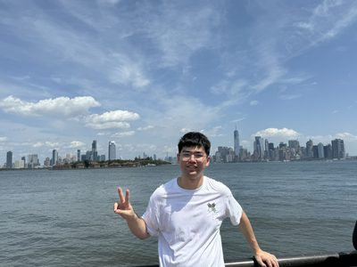

Jan 24, 2026
Test-Time Training for Long Context
Here I share some results and insights on managing long context in large language models through test-time training.

PhD Student @ Princeton CS
Efficient AI | Systems for ML | Algorithm-System Co-design
I am a passionate PhD student at Princeton CS, advised by Professor Kai Li and Professor Ravi Netravali. Before that, I obtained my B.E. degree from EE, Tsinghua University. My research focuses on efficient AI, spanning from algorithms to systems.
Previously, I had the privilege of working under the supervision of Professor Yu Wang and Xuefei Ning at Tsinghua on quantization algorithms.
I also interned at MIT HAN Lab, supervised by Professor Song Han, Shang Yang, and Haotian Tang, exploring efficient system design for quantized LLMs. I have also collaborated closely with Jason Lu from Nvidia Research.
Here I share some results and insights on managing long context in large language models through test-time training.
Explore the latest advancement in TinyChat – the 2.0 version with significant advancements in prefilling speed of Edge LLMs and VLMs.
Co-led the development. Accelerating Edge AI with Efficient LLM and VLM Deployment.
Outside of research, I enjoy a variety of sports (badminton, basketball) and am passionate about movies and TV series.
Feel free to reach out via email.